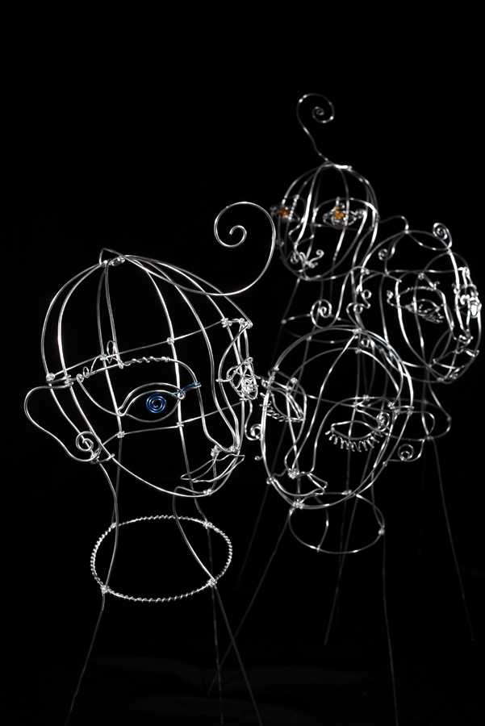
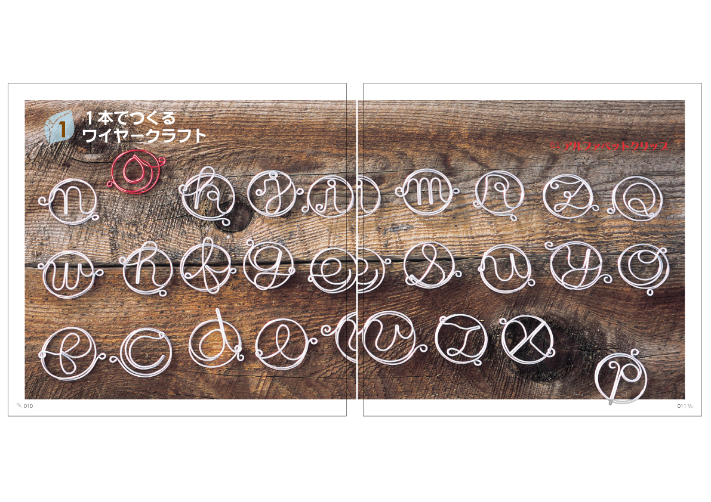
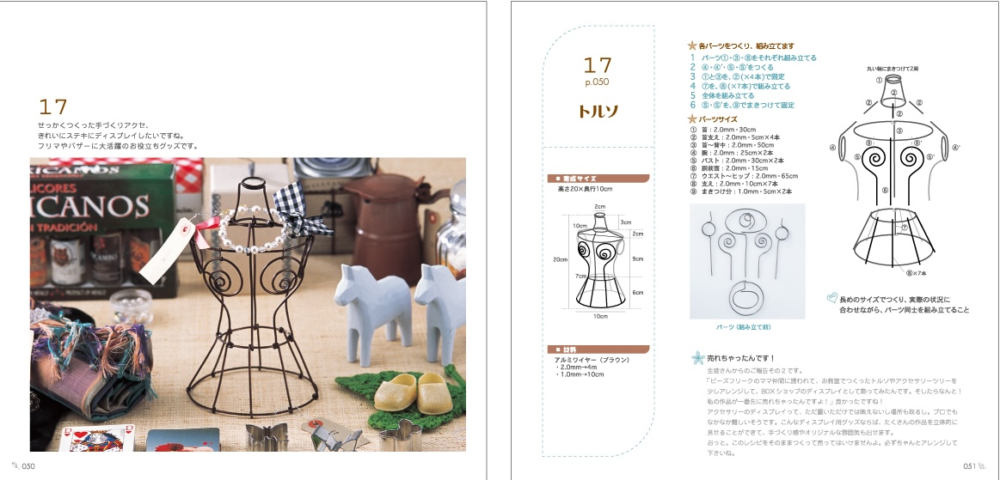
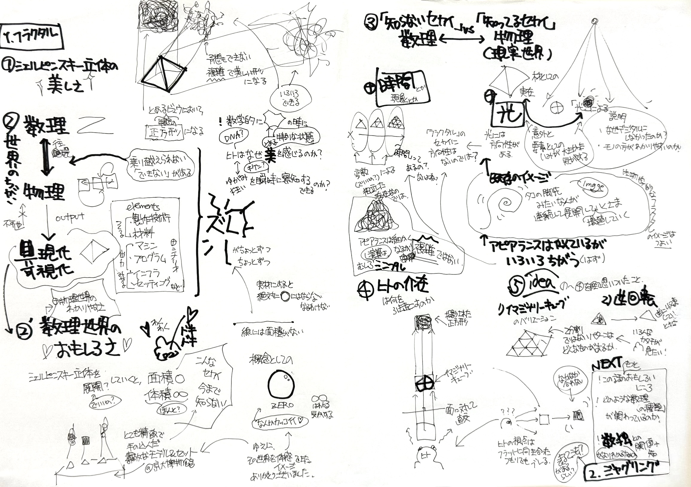
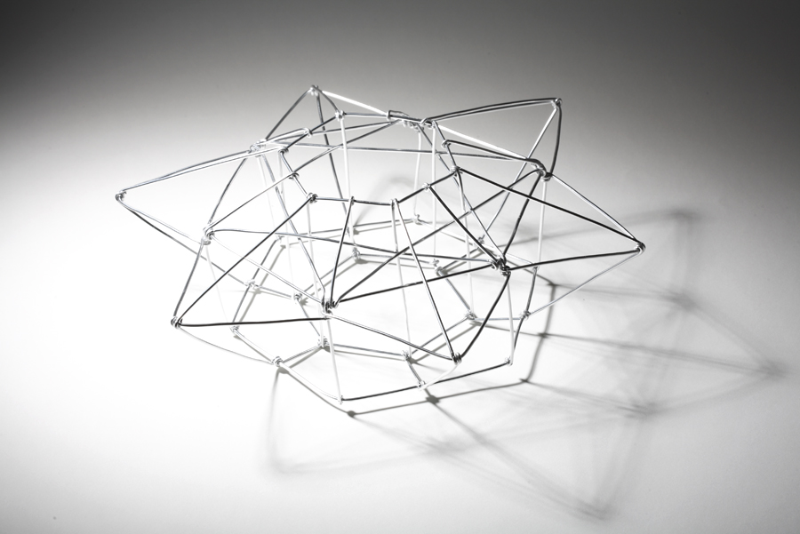

wirefactory
ワイヤーワーク研究と実践
1980年代後半からワイヤー素材の可能性を探求。オブジェのようなアート作品から、生活を彩る雑貨まで幅広く制作。展示、広告、映像媒体への展開と共に、レシピや工具、素材そのものの開発にも力を注ぐ。全国各地でワークショップを開催し、書籍、雑誌、TV出演など活動は多岐にわたる。
現在あらたな展開を模索し、準備中。



ワイヤー＆ビーズ（祥伝社）著書

wirefactory — 別サイト準備中
数学・フラクタル
数理の世界へ
「デザイン環世界」の解像度を上げるために、数理的イメージへの関心が深まっている。場における制約充足問題(CSP）や論理推論の体系、線形代数的世界観——これらすべては地続きにある。現在進行中のテーマ。


数理モデルのプロトタイプ
・星型二十面体と大星型十二面体の合体
・頂点・辺・面の関係はオイラーの多面体定理 $V - E + F = 2$ で記述できる
・各頂点座標は黄金比 $\phi = \frac{1+\sqrt{5}}{2}$ を含む対称群で表現可能